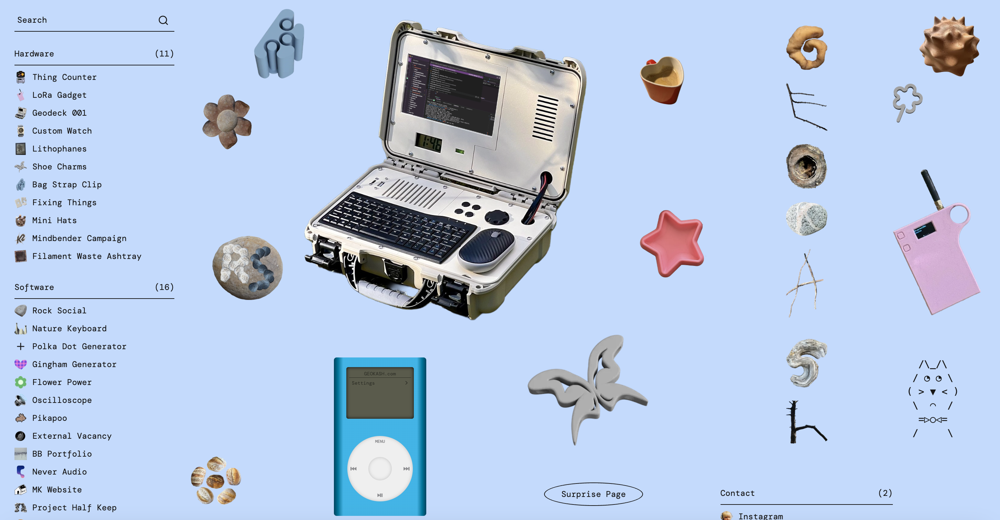

Mission Statement
Recently, I sold my beat-up 2010 Subaru Impreza. It was my primary way of getting out to visit my dad who lives in the suburbs. In my new Metra-heavy car-less life, I must now occasionally leave behind my sweet pup, Sad Girl May, who would usually be my travel companion to the great Chicago burbs.
The purpose of this site is to serve as an instructional guide and a relational scrapbook for taking care of my dog, now that I must leave her at her home in Chicago during the weekends that I go visit my dad. This will be a useful, and humorous, way for current May fans (my friends, roommates, etc.) and newcomers alike who are open to taking care of May when I cannot.
Goals
- Provide legitimate details for general May-care, and demonstrate clean semantic HTML knowledge in the process (e.g., food, supplies, vet information, walking routes, etc.)
- Create a site as quirky as my dog is. May comes with a lot of "lore," so the site should be a fun, colorful, and humorous reflection of her personality and our relationship.
- Provide a gallery of May photos to peruse and enjoy, and an interactive form submission where May caregivers can upload images of their own of May when they are dogsitting.
Layout & Sample Site

This website is a digital garden-esque directory of projects, ideas, and tools collected by Katarina Lingat. This website is up for the 2026 Tiny Awards, which showcases well-designed small websites. Katarina was one of my favorite nominees, and a version of her layout seems somewhat achieveable.
I'd like to design May's dogsitting guide website after geokash.com because I originally had the idea to design and print a physical zine for May's dogsitters. Once I saw this site, I realized this layout and model will be perfect for what I envision for it, almost like a zine pasted onto a website. I particularly like the images that are spread across the homepage, that connect to handwritten pop-ups that describe the image more in-depth. The left-side menu bar is also a distinct feature I enjoy a lot.
Content
Homepage
Introduction to site and actual instructive care information for May (e.g., vet information, amount of food per day, general schedule, etc.)
Tips & Tricks
Tips, tricks, and goofy stacks of information about May, including to-do's and do-not's (e.g., "Do not play Neu! in front of May. She is not allowed to listen to experimental 90's krautrock. When May listens to Neu! or any of their contemporaries, she gets vicious acid-flashbacks to her days as an original Pitchfork writer and becomes too snobby to enjoy any other music."). Just something to make people laugh.
Sad Girl May Gallery
A place to look at photos of May and includes a form submission to upload new photos of May while dogsitting her. If photo submissions are not possible, then a form to report/review how the dogsitter's time with May was for them.
Target Audience
The target audience of this site will be primarily those who will be dogsitting May when I am away from home without her for extended periods of time.
I'd like for this site to be a fun scrapbook of what it's like to live with May, so that any dogowner (or fans of dogs) could enjoy the content of this website.
For people who already know my dog, like my roommates, this will be a fun place to go to get reminders of May's general care, receive addresses/phone numbers in case of an emergency, and read up on the new "May lore" in the Tips and Tricks page. For newcomers, this will be a place to learn everything they need to know in one helpful site, and maybe resurface memories of their own pets and silly things they come up with in their relationship with their pets.